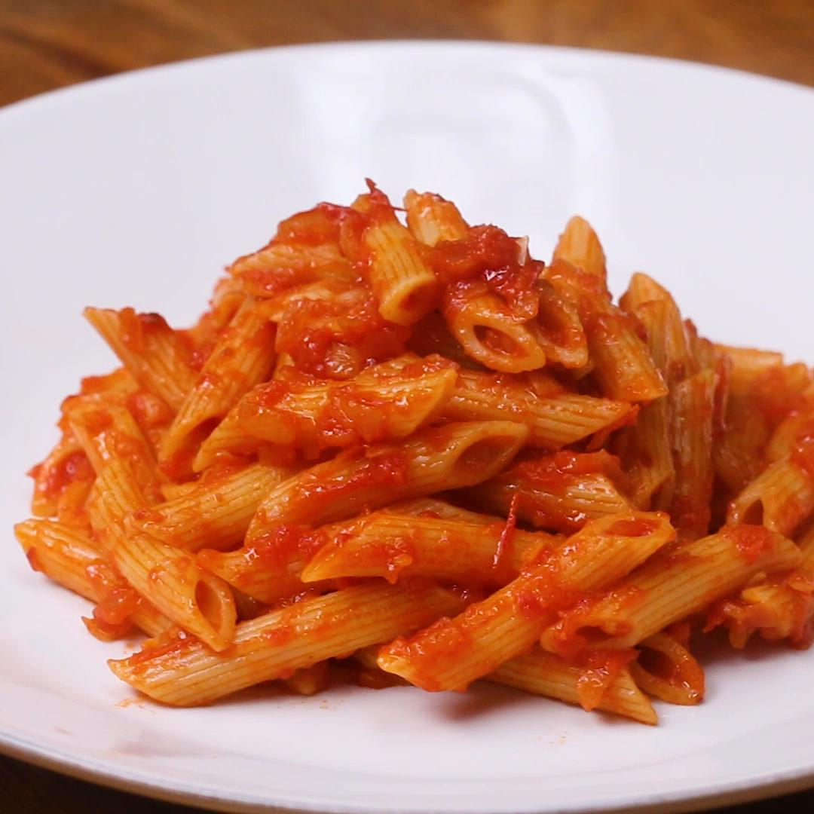

Pasta With Tomato Sauce

Description
If you are searching for a simple but delicious pasta recipe than this is the recipe for you!
Ingredients (4 servings)
- 2 tablespoons olive oil
- ½ medium onion, finely diced
- 2½ teaspoon red chili flakes
- 1 clove garlic, minced
- 14 oz crushed tomato(395 g), 1 can
- 1 teaspoon cinnamon
- a pinch of salt
- ½ lb penne pasta(225 g)
Steps
- Heat a large sauté pan over medium heat. Add the olive oil and onion, and cook until the onion is translucent, 8-10 minutes.
- Add the chile flakes and garlic, and cook for another 2 minutes, until fragrant. Stir in tomatoes and simmer uncovered for 20 minutes.
- Bring a large pot of salted water to a boil. Cook the pasta according to package instructions. Save ½ cup (120 ml) of pasta water, then drain.
- Add the drained pasta to the sauce. Stir well, adding a little pasta water if needed to loosen the sauce. Season with salt to taste.
- Enjoy!